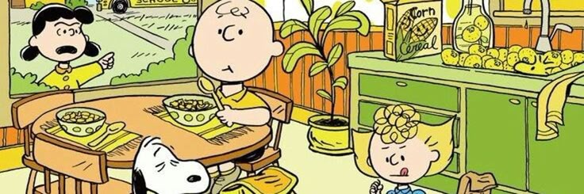
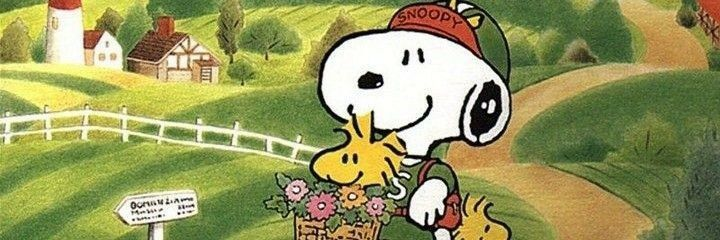

Inicio
Historia
Personajes
Datos Curiosos
Datos Curiosos


Anterior
Siguiente
Significado de Snoopy
Su cumpleaños
Raza de perro
La Casita
Comics en el mundo
Los hermanos de Snoopy
hermanos
Tiene 7 hermanos (aunque 5 de ellos solamente aparecieron en la tira cómica) de entre los más conocidos está su hermano Spike, quien vive en Needles, California, su hermana Belle y los restantes responden al nombre de Andy, Olaf y Marbles.